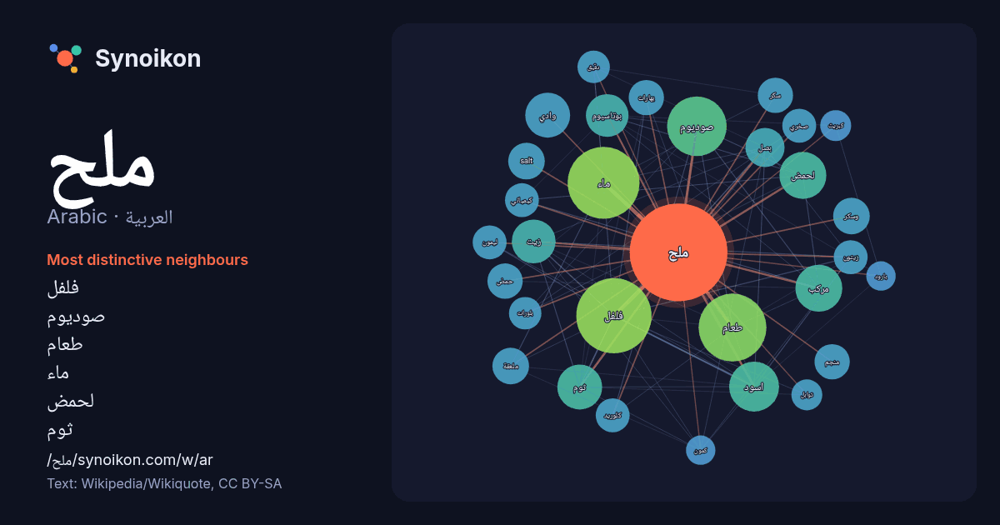

العربية · Arabic · word of the day list
ملح
“salt” · The words found around it in 758 instances from Arabic Wikipedia, Wikiquote.

Most distinctive neighbours
- فلفل 57×
- صوديوم 33×
- طعام 33×
- ماء 26×
- لحمض 24×
- ثوم 21×
- بوتاسيوم 18×
- مركب 18×
- زيت 17×
- بصل 16×
- اسود 16×
- salt 15×
- وسكر 15×
- ملعقة 15×
- بهارات 14×
- منجم 13×
- ليمون 12×
- صخري 12×
- كلوريد 12×
- وادي 11×
× = how many times more often than in general Arabic Wikipedia text.
Most frequent neighbours
- فلفل 59
- ماء 54
- طعام 48
- صوديوم 37
- اسود 26
- قرية 26
- لحمض 23
- مركب 23
- ثوم 21
- وادي 21
- زيت 20
- بوتاسيوم 19
- بحر 17
- بصل 16
- مسلسل 16
- صغيرة 15
- salt 14
- اضافة 14
- ملعقة 14
- وسكر 14
In context
- ملح الطعام يتكون الملح المعروف بشكل رئيسي من مركب كيميائي يعرف بكلوريد الصوديوم (NaCl) والذي ينتمي لمجموعة أكبر من الأملاح. يوجد ملح الطعام في الطبيعة Wikipedia snippets · ملح الطعام
- متعلّقة بعنوان ملح. إذا وصلت لهذه الصفحة عبر وصلة داخليّة، فضلا غيّر تلك الوصلة لتقود مباشرة إلى المقالة المعنيّة. ملح قد تعني:- ملح (أسفل الملح) (المسيمير): Wikipedia snippets · ملح (توضيح)
- ملح وسمرة مسلسل تلفزيوني, من بطولة هدى حسين, من إخراج علي العلي, تم عرضه في 2023. تعيش هند، وهي ممرضة، حياة سعيدة وهادئة على الصعيدين المهني والعائلي Wikipedia snippets · ملح وسمرة (مسلسل)
- ملح الطعام والأمراض القلبية الوعائية تُجرى العديد من الدراسات على استهلاك الملح وذلك لدوره المهم في الوظائف الحيوية المختلفة في جسم الإنسان وتأثيره على Wikipedia snippets · ملح الطعام والأمراض القلبية الوعائية
- ملح الأرض هو مسلسل مصري درامي، أكشن، سياسي، كوميديا سوداء، إنتاج عام 2004، من إخراج خيري بشارة ومن بطولة: محمد صبحي أيضا في التأليف وكتابة السيناريو والحوار Wikipedia snippets · ملح الأرض (مسلسل)
- ملح الطعام مستنبطا من الحجر، ملح البارود (ثلج الصين) Sal petrae هذه صفحة توضيح تحتوي قائمة صفحات مقالات متعلّقة بعنوان ملح الحجر. إذا وصلت لهذه الصفحة Wikipedia snippets · ملح الحجر
- منجم كهيورا للملح (کھیوڑہ نمک کان)، المعروف أيضًا باسم منجم مايو للملح، هو ثاني أكبر منجم ملح في العالم، ويقع في كهيورا في مقاطعة جيلوم، البنجاب، باكستان Wikipedia snippets · منجم كهيورا للملح
- الملح المُتبل (الإنجليزية: Seasoned salt) هو مزيج من ملح الطعام، و أعشاب، و البهارات، و مكسبات طعم أخرى، وفي بعض الأحيان يتم إضافة غلوتامات أحادية الصوديوم Wikipedia snippets · ملح متبل
More Arabic words
- أغنية
- إله
- تاريخ
- جبل
- جرس
- جزيرة
- جسر
- حديقة
- حصان
- حقيقة
- حياة
- خبز
- خريطة
- خريف
- ذهب
- زمن
- ساعة
- شاي
- شتاء
- صحة
- صحراء
- صمت
- صيف
- طبيعة
- طريق
- طعام
- ظل
- عائلة
- عاصفة
- عسل
- علم
- عمل
- غابة
- فن
- قطار
- قطة
- قلب
- قوة
- كلب
- لغة
- ماء
- مال
- مدينة
- مرآة
- مطر
- مناخ
- موت
- نجم
- والدة
Precomputed on 2026-10-09 with default settings (±5 words, medium corpus). The interactive map can refresh it with live data.